Xingxing Xia
Every morning, I started my day by waking up the hotel staff.
Don’t think I was the only early bird in China. By the time I left the hotel,
the street cleaners had already done sweeping the street, and were waiting for the garbage to burn out.
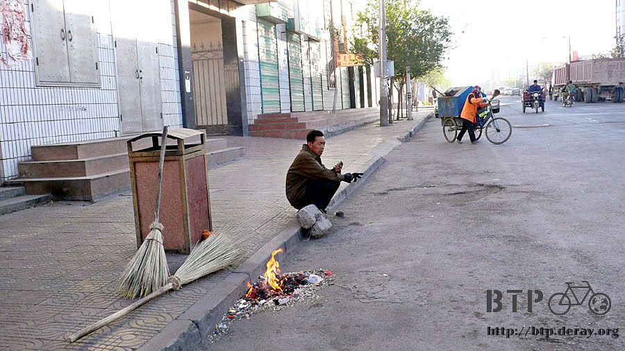
Hard-working miners also started their day —or they took shifts so the work can get done 24 hours non-stop?
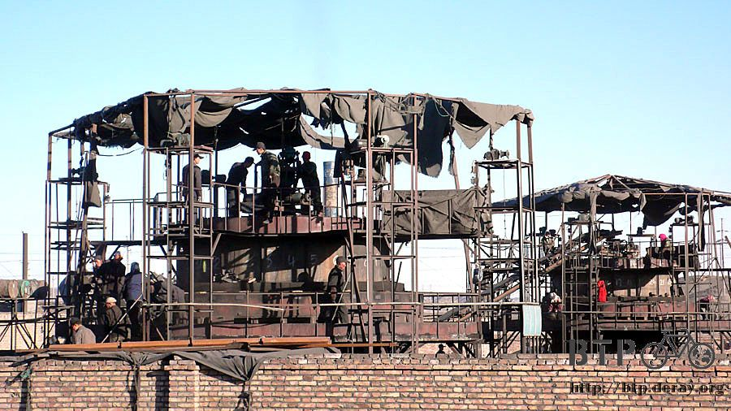
With no luck finding any restaurant/stall for breakfast, I decided to move on to Rt 312, and head for Xingxing Xia.
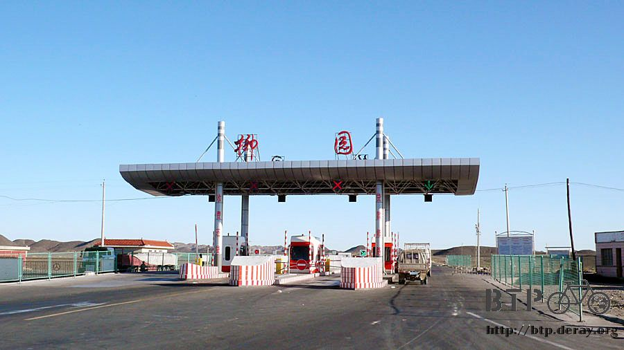
I made my own breakfast-on-the-"bike": crackers, milk, and raisins.
Since this was a pretty remote area, I "ordered" the same lunch as well.
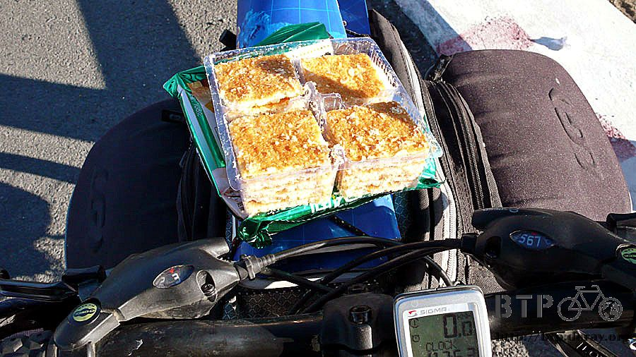
And I told myself, "Look around! You are lucky to even have food".
The weather in the morning was pretty breezy and comfortable.
I'd better ride faster for now. Once the wind started to blow crazy in the afternoon, I would have a hard time just to "move".
From Gansu to Xinjiang was all alternating uphill and downhill ride, not much of elevation,
but I did cut through several mountains.
The deeper I biked into the remote area, the more I was proud of myself carrying more-than-enough of food
and drinks on my Dido. I can almost open a mobile grocery stand with these foods.
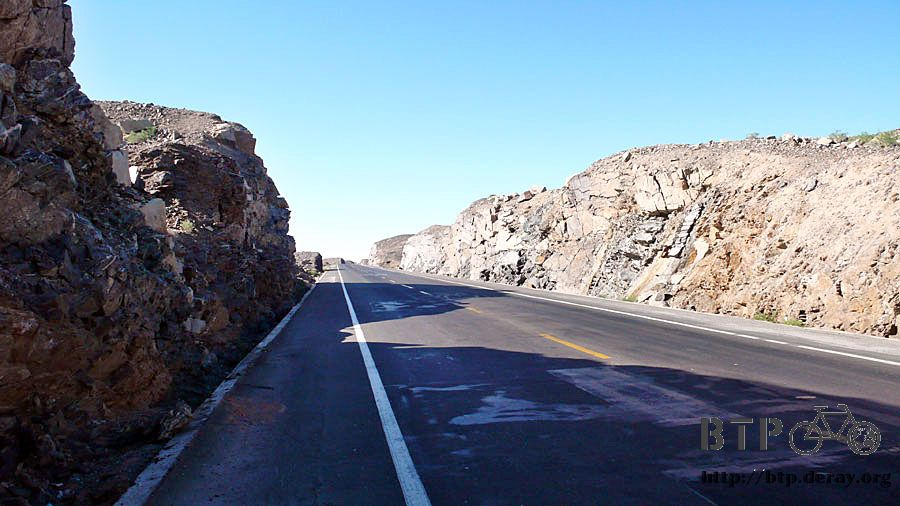
I noticed that I was on 3333 (I called it four 3s) mile mark on Rt 312,
I couldn't remember when was the last time I hit "four 2s", but I know I still have a long way to go on this journey.

It was about 5 hours on the bike, and I had passed so many mountains.
The desert also changed its color, from light brown, to white, and now was red.


I felt pretty lack of energy at this moment, I wondered if that's because I didn't take enough break so far.
How much longer can I finally arrive at Xingjinag?

He was the first Urumqi native I met. He had been traveling from Urumqi to Lhasa, and now on the way back home.
He asked me," Are you going home, too?" My home is thousands of kilometers away.
I am traveling "away" from home.
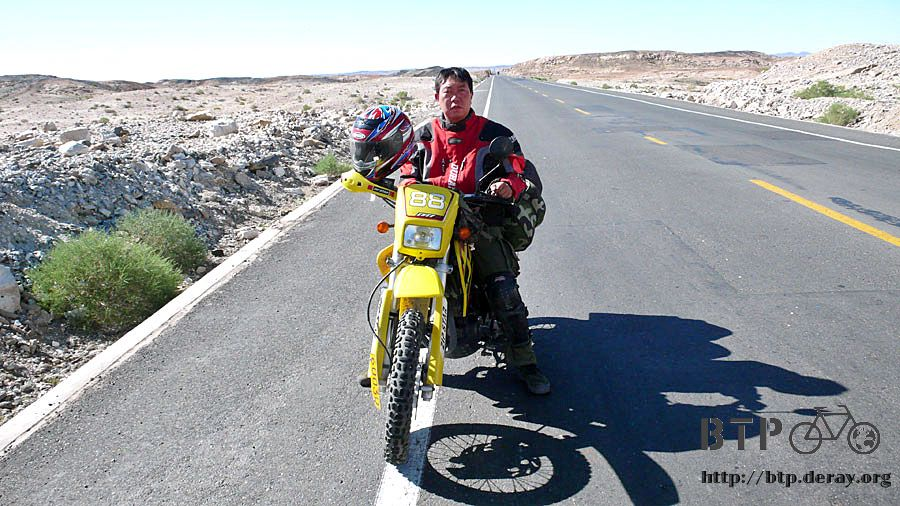
Just when I was about to doze off, ON THE BIKE, I saw a little "store", covered by some black sheet.
I went close to check it up and found it sells watermelon.
Why did they sell watermelons at a place like this? Their major customers are the truck drivers, I came here was purely by chance.

These watermelons were harvested from the owner's farm at Xian, and transported here to sell during the summer time.
Here is the truck. The front side is the store; behind it is where they sleep at night.
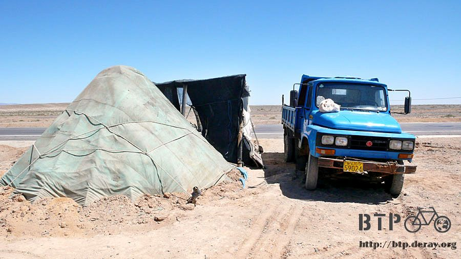
I asked the lady to pick a proper size of watermelon for me; I wanted to finish it before I moved on.
I can eat about half a jin (1 Jin is roughly 1.1 pound, or 0.5 kg) of dumplings at once,
but watermelon? Of course I can't stuff myself with 10 jins of it, can I?
Well, it was still early. I can eat this as my lunch, I would take my time, and I was sure that eventually, I would finish it.
Every customer came here for watermelons will ask what were those dark brown-ish stuffs lying there?

Ha, I asked the same question already, so I was so qualified to answer this.
"That is called Suoyang (Songaria Cynomorium Herb), also known as desert ginseng.
It is good for men—if you know what I mean. You usually soak it into wine and drink it."
The mother and the daughter were in charge of selling watermelons at this store,
while rest of the family members stayed at Xian, to take care of Lanzhou honeydew melons and cottons.
If you ask me what's special about the melons here? I would say, hmm, too many seeds, too many big seeds.
But even so, it was quite sweet, not bad at all.
While I was enjoying my watermelon, the lady next door (next store) came to fill up her water and asked me about my trip.
To me, what I really wanted to ask was what they ate for the whole summer. Please don't tell me ONLY watermelons…
On this photo, from right to left: the daughter, the mom, and the lady next store.

After finishing half o the watermelon, I had to get up to walk it off---evaporate the water out of my body,
literally, then I came back to finish up the rest of the melon.
It was so hot out there. I had to hide under the shade that this store provided;
I ate my watermelon here, and rested a bit afterwards, too.
I looked into my backpacks, and I decided to share my oranges.
I gave them one each, but they were concerned that I might get hungry later, so they three shared only one.
I really had a great time chatting with them. The mother wanted to give me a watermelon, but I really can't carry this huge melon with me.
So, she gave me this pancake that was bigger than my face.
It was pretty dry to begin with, and this one was even "drier" because it was "sun-dried". It felt pretty rough on the surface.
After taking some bites, I knew I had found my brick flatbread a best friend.
They were definitely made for each other, and they both can break your teeth.I

wanted to pay the mother some cash for this cake, but I knew she won't accept it.
She wanted to make sure I have enough food on the road.
I guess that was because what I said earlier that after biking more than 100 km without seeing any civilization,
I told myself that I will always have enough food in my backpacks.
Well, I can't pay her money. So I shared the egg rolls as my token of appreciation, and they finally accepted it.
We talked and talked, until almost 2:00 in the afternoon. And I was only 20 km away from my destination, so I was in no rush at all.
However, the wind started to get stronger, even this little store was going to fly up to the sky.
It agreed again with what others told me about the strong wind in the afternoon.
Well, I thought this is the hint for me to move on, so I packed that brick flatbread into my backpacks,
but left the egg rolls on the table, "gift exchange".
As I continued my journey, I noticed something interesting.
It was exactly the same road. In the morning, I had a great time enjoying the biking.
In the afternoon, the strong upwind totally changed the scenario: it was so difficult to keep moving forward.
So I tried to see it as a warm-up for later challenges that I will encounter, and I knew there would be MANY.
I can't help but taking some photos here. This "red" desert is really beautiful when you look at it from a distance.
Feels like the whole desert is on fire, feels like I am brought back to ancient China.

I was riding uphill after leaving the watermelon store, and the very top would be the Xingxing Xia.
I had to work really hard on the paddle.
All I had in mind was TOMORROW. It is around 200 km between Xingxing Xia and Hami,
the chances to meet anybody in-between will be very slim, the only stop in-between will be a camel stop,
the only scene I will see is Gobi desert.
Therefore, I have only two options: camping, or ride the whole 200 km in one day.
I saw a guy wearing a straw hat and sitting by his luggage in the middle of nowhere. My first thought was, he was a homeless.
But, he was studying the map, a CHINESE map. I guessed he was also a traveler,
maybe by hitch-hiking? Well, look at how carefree he was, I grinned.

It was about 2 km away from Xingxing Xia, the new sign has Chinese and another interesting language,
which looked like two flowers blooming in the desert.

This was the first time I saw a sign pointing Urumqi, which is a couple of thousands away from Beijing.
After biking for over a month, finally I was only 700 km away from the capital of Xinjiang,
Urumqi, which might take me from 7-10 days to arrive.
The arrival of Urumqi also means the journey in China territory will end soon.
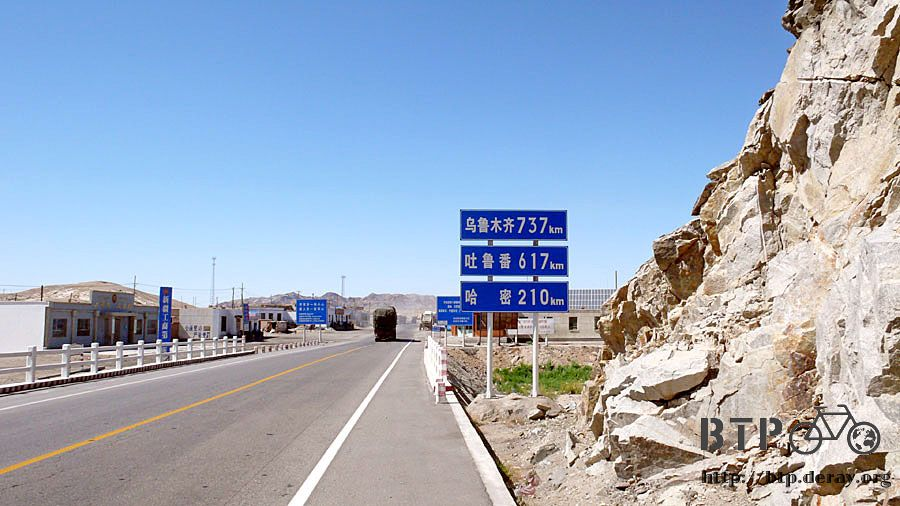
Finally, I entered Xingxing Xia at around 4:00 in the afternoon.
The place with such a pretty name—Xingxing means stars in Chinese, turned out was not that pretty after all.
Since there was no rest area around 100 km before or after,
this place was full of trucks parking there while the drivers take a break and have lunch.
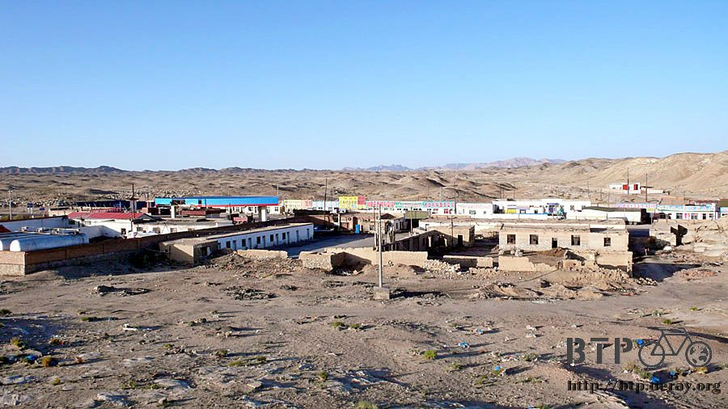
Lots of restaurants, truck repair shops, grocery stores, and three gas stations. Not really for tourists.
I decided to stay here for one night, 10 RMB, because of its name, Xingxing Xia.
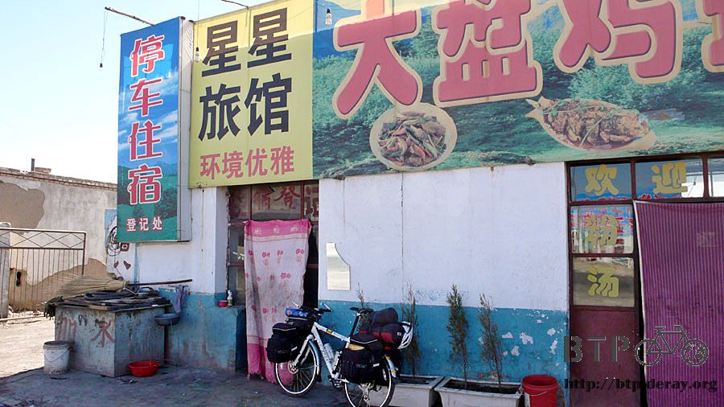
It was a nice room, decent size, and came with coal and furnace. You can put the coals into the furnace if necessary.
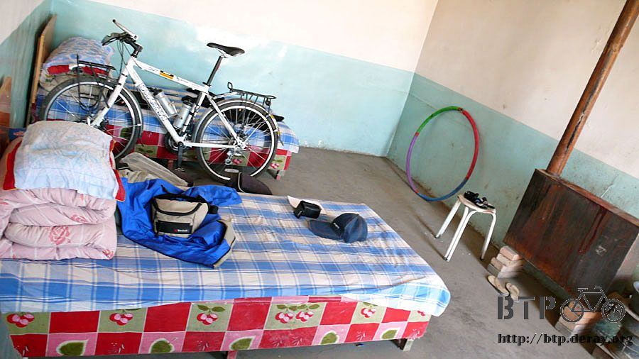
There was no tap water, though. So I had to fetch a pail of water and used that to clean up myself. Suddenly I felt so much better.
I had my dinner at the restaurant next door, I ordered a lamb soup, stir-fried bok choi with pork, and steamed twisted rolls.
The TV in the restaurant couldn't play regular programs due to lack of signals,
so they played karaoke VCD instead. Listening to these weird songs, I finally had my first REAL meal on the table for today.

The backyard of this hotel was very spacious and not much light to affect the star-watching.
Since this place is called Xingxing Xia, there was no way I would miss the opportunity to view the stars at night.
I went to bed very early at night, got up at 3:00 and took some photos of the sky that was filled with stars, totally overwhelming to me.
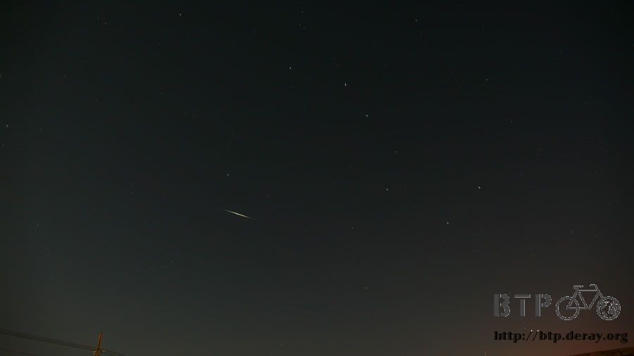
Luckily, I caught some shooting stars and the big dipper on my photos.
Shiveringly, I stood under the starry sky, and enjoyed the peaceful and yet noisy atmosphere at this special night.
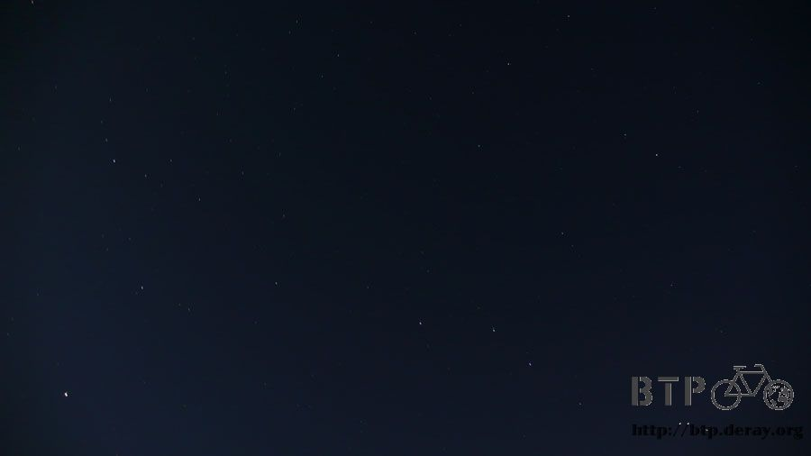